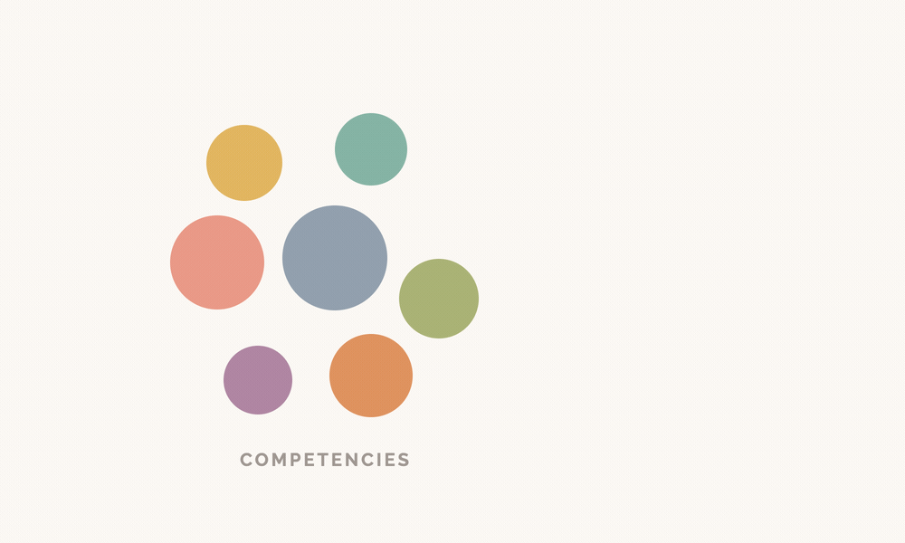

This case study contains confidential details. Enter the password to continue, or email me at evontay.home@gmail.com for access.
2023–2024 | Role: DesignOps Lead
I saw multiple distinct challenges the design organisation was facing, and a hypothesis that changing how people were grouped around work could address all of them at once. That hypothesis became a pod-based operating model, tested through experimentation rather than mandate.

Treating these as four separate problems would have meant four separate initiatives competing for the same scarce attention. Treating them as expressions of one structural issue meant a single experiment could move all four at once.
I adapted Peter Merholz's concept of "centralised partnership" from Org Design for Design Orgs—a design function keeping a central home for craft while embedding more deeply into the business it serves. The structure was borrowed. The concrete unit was mine to design: a pod, a small multidisciplinary team embedded in one business area for a sustained period, staffed once rather than request by request, autonomous in its domain while staying connected to the central practice.
The name was deliberate. "Team" was too generic; "squad" carried agile baggage this model didn't share. I wanted the image of peas in a pod—small, complete, distinct, part of something larger.
Without authority to mandate a new structure, the strongest argument was evidence of behaviour already happening, patiently gathered—not a proposal. This also meant accepting a much longer timeline than a mandate would have required.
Three pods launched simultaneously as a pilot.
Four competing initiatives would have fought for the same scarce attention; one experiment addressing a shared cause moved all four.
Merholz's concept gave rationale; the actual shape of a pod, and its name, had to be designed for this context.
The idea needed roughly a year of quiet co-development before it was ready to pilot.
Introducing this as demand management wasn't the substance of the work, but it bought the real experiment time to prove itself.
Three field notes follow individual threads further than a project page can: the demand and capacity mechanics, the leadership-development experiment and its costs, and the organisational-design thinking borrowed from Merholz.
This work involved close collaboration with practitioners, stakeholders, and business leadership. Details have been generalised to protect confidential and proprietary information.